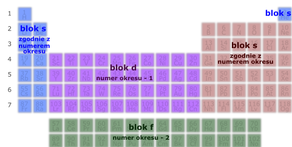
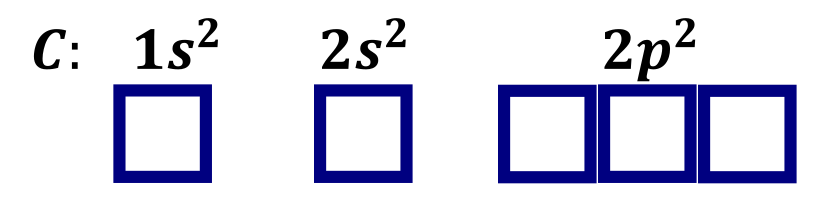
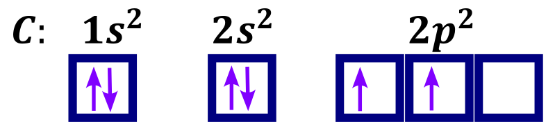
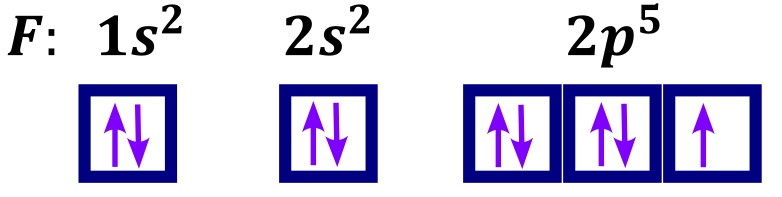
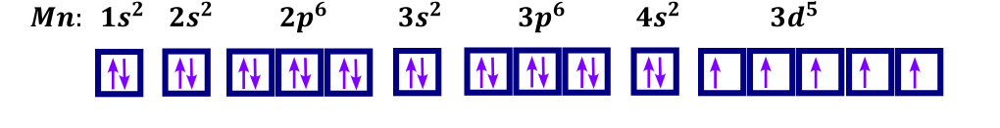
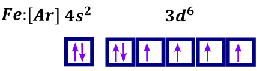
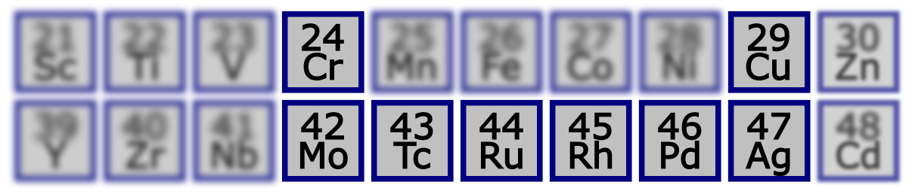
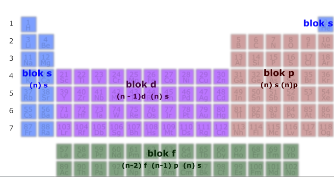

Elektrony znajdują się poza jądrem atomowym, rozmieszczone są one na powłokach elektronowych, które zbudowane są z podpowłok, które zbudowane są z orbitali. Orbitale można sobie wyobrazić jako kolejne możliwe orbity, które mogą zająć elektrony, ale należy zdawać sobie sprawę że jest to uproszczenie. Aby jednoznacznie wskazać orbital należy podać wszystkie jego parametry; działa to trochę jak podawanie adresu np. listu. Analogicznie w celu zaadresowania listu na początku musimy podać, jakie mamy miasto (powłokę), potem, jaką ulicę (podpowłokę), a potem jaki numer domu (orbital). Na jednym orbitalu są maksymalnie dwa elektrony, ale może być tylko jeden, albo nawet zero, co jest analogią do ilości osób w gospodarstwie, może mieć gospodarstwo takie, które prowadzone jest przez parę, przez singla lub stoi puste. Mimo tolerancji nie mamy innych układów.
Jednocześnie niepełne zaadresowanie listu czasem jest wystarczające, żeby list doszedł, szczególnie jeżeli mówimy o bardzo małych miejscowościach, analogicznie mimo podania nie wszystkich parametrów opisujących orbital (powłoki, podpowłoki i numeru orbitalu) czasem można zinterpretować o który orbital nam chodzi.
Jednocześnie orbitale tej samej powłoki i podpowłoki mają tę samą energię.
Powłoki oznaczamy kolejnymi literkami alfabetu, zaczynając od literki/symbolu \(K\) dla pierwszej powłoki. Numer powłoki świadczy z ilu podpowłok jest ona zbudowana.
\[\mathbf{1}\mathbf{pow}ł\mathbf{oka} \rightarrow \mathbf{K};\mathbf{2} \rightarrow \mathbf{L};\ \mathbf{3} \rightarrow \mathbf{M}\ \mathbf{i}\ \mathbf{dalej}\ \mathbf{zgodnie}\ \mathbf{z}\ \mathbf{alfabetem}\]
Czyli np. powłoka \(M\) jest trzecia powłoka i zbudowana jest z trzech podpowłok.
Podpowłoki również oznaczane są symbolami literowymi, w tym wypadku są to małe litery alfabetu. Jednocześnie na danej podpowłoce jest określona ilość orbitali (oznaczamy je kratkami, o czym później), a tym samym elektronów. W nawias podano ilość orbitali, z których się zawsze zbudowana jest dana podpowłoka oraz maksymalną ilość elektronów, jako dwukrotność ilości orbitali.
\[1.podpowłoka \rightarrow s\ (1orbital \rightarrow \max 2e^{-})\]
\[2 \rightarrow p\ (3orbitale \rightarrow \max{6\ e^{-})}\]
\[3 \rightarrow d\ (5\ orb \rightarrow 10\ e^{-}\]
\[4 \rightarrow f\ (7\ orb \rightarrow 14e^{-})\]
\[5 \rightarrow g\ i\ dalej\ zgodnie\ z\ alfabetem\]
Symbolika zapisu podpowłok. Podpowłoki zapisujemy według schematu:
\[(nr.\ powłoki)(symbol\ podpowłoki)^{ilość\ elektronów\ na\ podpowłoce}\]
Zapis \(4p^{5}\) oznacza, iż jesteśmy na 4 powłoce, na podpowłoce p i znajduje się tam 5 elektronów.
Metoda rozpisywania konfiguracji elektronowej podpowłokowej (tzw. pełnej) przy użyciu układu okresowego. Konfiguracja elektronowa to nic innego jak rozmieszczenie elektronów na podpowłokach elektronowych dla danego atomu/ jonu, czyli wypisanie wszystkich zajętych podpowłok według powyższego zapisu wraz z ilością elektronów, które się na danej podpowłoce znajdują. Zwykle zapisujemy według:
\[symbol\ drobiny:zapełnione\ podpowłoki\ według\ symboliki\ \]
Układ możemy podzielić na bloki, które mówią, na którą powłokę i podpowłokę wskakuje kolejny dodawany elektron. Oczywiście rodzaj obsadzanej podpowłoki jest określany przez rodzaj bloku, natomiast numer obsadzanej powłoki zależy od okresu (numerka poziomego) i rodzaju bloku.

Np. chcąc rozpisać konfiguracje ołowiu, startujemy od wodoru i paluchem jedziemy do zadanego atomu kolejno dodając elektron na podpowłoce zdefiniowanej przez rodzaj bloku i okres w których się aktualnie znajdujemy.
\[Pb:\ 1s^{2}2s^{2}2p^{6}3s^{2}\ 3p^{6}4s^{2}\ 3d^{10}4p^{6}5s^{2}4d^{10}5p^{6}6s^{2}4f^{14}5d^{10}6p^{2}\]
\[Ca:1s^{2}2s^{2}2p^{6}3s^{2}3p^{6}4s^{2}\]
\[Mn:1s^{2}2s^{2}2p^{6}3s^{2}3p^{6}4s^{2}3d^{5}\]
Z zapisu podpowłokowego bardzo łatwo jest zrobić zapis powłokowy – czyli jak rozmieszczone są elektrony na powłokach – grupujemy wypisane podpowłoki o tych samych numerkach powłok w zapisie podpowłokowym.
\[Pb:\ 1s^{2}2s^{2}2p^{6}3s^{2}\ 3p^{6}4s^{2}\ 3d^{10}4p^{6}5s^{2}4d^{10}5p^{6}6s^{2}4f^{14}5d^{10}6p^{2}\]
I liczymy łącznie ile elektronów jest na danej powłoce
\[Pb:K^{2}L^{8}M^{18}N^{32}O^{18}P^{4}\]
Zapis pełny podpowłokowy jest zapisem długim, a przez to niewygodnym, szczególnie dla dalszych atomów. Wprowadzono, więc zapis skrócony podpowłokowy, gdzie startuje się od poprzedniego gazu szlachetnego zamiast od wodoru. Ogólny zapis skrócony podpowłokowy wygląda tak:
\[symbol\ atomu:\lbrack poprzedni\ gaz\ szlachetny\rbrack\ zapełnione\ podpowłoki\ według\ symboliki\]
W zapisie tym można napisać, iż ołów ma
\[Pb:\lbrack Xe\rbrack\ 6s^{2}\ 4f^{14}5d^{10}\ 6p^{2}\]
Z zapisu skróconego podpowłokowego nie da się zrobić pełnego zapisu powłokowego, z uwagi na brak zapisu wszystkich podpowłok!!
Należy PODKREŚLIĆ, IŻ DLA DANEGO ATOMU PODPOWŁOKI I POWŁOKI SIĘ NIE KOŃCZĄ, natomiast nie są one zupełnie obsadzone elektronami, czyli np. atom sodu mimo, że ma konfigurację elektronową \(1s^{2}\ 2p^{2}\ 2p^{6}\ 3s^{1}\) ma również wszelkie inne powłoki i podpowłoki, tylko, że nieobsadzone, \(3s\ \) czy \(8f\) , tylko że nieobsadzone, nie ma na nich elektronów.
Rozważmy zapis podpowłokowy węgla:
\[\mathbf{C:1}\mathbf{s}^{\mathbf{2}}\mathbf{2}\mathbf{s}^{\mathbf{2}}\mathbf{2}\mathbf{p}^{\mathbf{2}}\]
Każda podpowłoka, jak powiedzieliśmy wcześniej, składa się z odpowiedniej, ściśle określonej ilości orbitali (s-> 1 orbital; p-> 3 orbitale; d-> 5 orbitali; f-> 7 orbitali). Orbitale zapisujemy za pomocą kratek, połączonych ze sobą, np. chcąc podpowłokę d symbolizuje 5 połączonych kratek. Połączenie orbitali/ kratek oznacza tę samę energię narysowanych orbitali, narysowanie ich po przerwie oznacza rożną energię tych samych orbitali. W przypadku rozważanego węgla orbitale, na których znajdują się elektrony to \(1s\) -> jeden orbital (jedna kratka); \(2s\) -> jeden orbital (jedna kratka); \(2p\) -> trzy orbitale o tej samej energii (trzy połączone kratki).

Kolejno przechodzimy do rozmieszczania elektronów w orbitalach. Elektrony w danym orbitalu mogą być maksymalnie dwa. Jeden z nich musi mieć tzw. spin skierowany do góry, drugi do dołu. Spin jest wielkością, która nie ma odniesienia w makroświecie, można go sobie wyobrazić trochę jako kierunek obrotu bączka (tej zabawki dla dzieci). Bączek może się obracać w lewo i w prawo, spin elektronu może może przyjmować dwie wartości tzn. \(+ \frac{1}{2}\) i \(–\frac{1}{2}\) . Niestety istnieją inne cząstki elementarne, które mogą przyjmować więcej możliwych wartości spinu niż dwie, i dość ciężko odnieść to do kierunku obrotu bączka. Nie wnikając w tajemnice chemii i fizyki kwantowej, najważniejsze jest, że elektrony na danym orbitalu mogą być maksymalnie dwa i jeden będzie miał strzałkę skierowaną do góry, a dugi do dołu. Jeżeli jeden elektron to ma strzałkę tylko do góry. Elektrony wpierw w obrębie danej podpowłoki umieszczamy do góry, aż do umieszczenia w każdym orbitalu rozważanej podpowłoki jednego elektronu. Potem, jeżeli mamy nadmiarowe elektrony to umieszczany je w dół dopisując kolejne strzałki w dół do półobsadzonych orbitali. Po rozmieszczeniu w ten sposób wszystkich elektronów danej podpowłoki przechodzimy do rozmieszczania kolejnej.


Rozmieszanie na analogiczne do rozmieszczania ludzi w autobusie, który mają podobne preferencje siedzenia przy oknie i jednocześnie się nie znają. Najpierw ludzie usiądą każdy przy oknie, dopiero potem, gdy zapełnimy wszystkie miejsca przy oknach (spin do góry) ludzie będą zajmować miejsca od strony korytarza (spin w dół).

W ten sposób można również rozpisywać konfigurację dla zapisu skróconego.

Przedstawiona metoda rozpisywania konfiguracji elektronowej dotyczy tzw. stanu podstawowego, czyli najbardziej korzystnego rozmieszczenia elektronów, o najniższej energii. Oczywiście możliwe są inne rozmieszczenia elektronów, takie rozmieszczenia nazywane są stanami wzbudzonymi.
Chcąc zapisać stan podstawowy to rozpisujesz konfigurację elektronową stosując metodę przedstawioną powyżej. Stan wzbudzony natomiast jest wtedy, kiedy ilość elektronów dla danego pierwiastka lub jonu jest taka sama, natomiast inne jest ich rozmieszczenie na podpowłokach. Wzbudzenie elektronów zachodzi na skutek dostarczenia energii przez np. ogrzanie próbki w palniku lub naświetlanie światłem o odpowiedniej długości fali.
W chemii od każdej zasady są wyjątki. I od przedstawionej powyżej metody rozpisywania stanu podstawowego też są wyjątki – nazywają się promocje. Na poziom matury, bez informacji wstępnej musimy znać dwa takie wyjątki, to chrom i miedź.
Normalnie, zgodnie z przedstawionymi zasadami chrom powinien mieć konfigurację elektronowa \(Cr:\lbrack Ar\rbrack 4s^{2}3d^{4}\) . Ale że jest wyjątkiem to ma \(\mathbf{Cr:}\left\lbrack \mathbf{Ar} \right\rbrack\mathbf{4}\mathbf{s}^{\mathbf{1}}\mathbf{\ 3}\mathbf{d}^{\mathbf{5}}\) . Analogiczna sytuacja występuje dla miedzi, konfiguracja w stanie podstawowym powinna wyglądać: \(Cu:\lbrack Ar\rbrack 4s^{2}3d^{9}\) , natomiast, że występuje promocja to stan podstawowy to: \(\mathbf{Cu:}\left\lbrack \mathbf{Ar} \right\rbrack\mathbf{4}\mathbf{s}^{\mathbf{1}}\mathbf{3}\mathbf{d}^{\mathbf{10}}\) .
Istnieją inne atomy gdzie są promocje, ale one są poza zakres matury. Te do czwartego okresu można zapamiętać, gdyż stanowią one taką podkowę razem z pierwiastkami trzeciego okresu, które musimy znać:

Aniony to jony obdarzone ładunkiem ujemnym, a więc o ilości elektronów równej sumie liczby atomowej danego jonu powiększoną o wartość ładunku jonu. Innymi słowy jon ma taką ilość nadmiarowych elektronów, jaki jest jego ładunek ujemny.
W celu napisania konfiguracji podpowłokowej jonu zapisujemy konfigurację elektroobojętnego atomu, a następnie nadmiarowe elektrony dodajemy do najniżej energetycznej podpowłoki (tzn. tej która wynika z kolejności wynikającej z układu okresowego), tak aby jej nie przepełnić. Ewentualne dodatkowe elektrony dodajemy do kolejnej podpowłoki. Inna metoda działająca tylko w przypadku anionów, ale nie kationów polega na napisaniu konfiguracji atomu mającego tyle protonów, co dany jon elektronów.
Np. Chcąc rozpisać konfigurację jonu \(S^{2 -}\) .
Rozpisujemy zapis podpowłokowy \(S\)
\[S:\lbrack Ne\rbrack 3s^{2}3p^{4}\]
Mamy dwa elektrony więcej z uwagi na ładunek jonu
\[S^{2 -}:\lbrack Ne\rbrack 3s^{2}3p^{6}\]
Wykorzystując drugą metodę wystarczy ustalić całkowitą ilość elektronów w interesującym nas jonie, w tym wynosi ona \(16 + 2 = 18\) . Kolejno odnajdujemy atom, którego ilość protonów wynosi 18, jest to argon i rozpisujemy jego konfigurację elektronową. Jest to konfiguracja elektronowa interesującego nas jonu.
\[S^{2 -}:\lbrack Ne\rbrack 3s^{2}3p^{6}\]
Np. Chcąc rozpisać konfigurację \(S^{5 -}\)
\[S^{5 -}:\lbrack Ne\rbrack 3s^{2}3p^{6}\]
Tu dodaliśmy dwa elektrony do podpowłoki \(3p\ \) . Maksymalna ich ilość na tej podpowłoce to 6 więcej się nie mieści, więc kolejne elektrony dorzucam do najbliższej energetycznie podpowłoki, czyli do podpowłoki 4s. Tam zmieszczą mi się maksymalnie dwa. Zostaje jeden, który dorzucam do kolejnej podpowłoki więc do podpowłoki \(3d\)
\[S^{5 -}:\lbrack Ne\rbrack 3s^{2}3p^{6}4s^{2}3d^{1}\]
Alternatywnie, wystarczy ustalić ilość elektronów dla interesującego jonu \(S^{5 -}\) , wynosi ona \(6 + 5 = 23\) , odszukać atom o takiej liczbie atomowej (skand) i napisać jego konfigurację elektronową jako konfigurację interesującego nas jonu.
Kationy to jony posiadające ładunek dodatni, więc muszą zawierać mniej elektronów niż elektroobojętny atom. Aby ustalić konfigurację kationu, więc należy wpierw ustalić konfigurację elektroobojętnego pierwiastka, a następnie usunąć z niej odpowiednie elektrony. Które elektrony zabieramy jako pierwsze zależy od bloku w jakim jest pierwiastek:
\[s \rightarrow zabieramy\ z\ \mathbf{s}\]
\[p \rightarrow wpierw\ z\ \mathbf{p},\ a\ jeżeli\ za\ mało\ to\ z\ \mathbf{s}\]
\[d \rightarrow wpierw\ z\ \mathbf{s},\ a\ potem\ z\ \mathbf{d}\]
Elektrony usuwamy oczywiście tylko z ostatnich energetycznie podpowłok. Elektrony te zwane są elektronami walencyjnymi i mogą uczestniczyć w reakcjach chemicznych. Elektrony walencyjne, wraz z kolejnością ich eliminacji dla kationów możemy odczytać z układu okresowego, zgodnie z schematem:

Należy podkreślić, iż elektrony walencyjne to NIE są koniecznie elektrony na ostatniej powłoce, zależy od bloku, w którym jesteśmy, tak w podstawówce nakłamali. Elektrony walencyjne to są te, które wchodzą w reakcję (i mają najwyższą energię).
Jak widać zależą od bloku, w którym jesteśmy (n- numer okresu)
Blok s to n s np dla wapnia -> 4 okres walencyjne to \(\mathbf{4}\mathbf{s}^{\mathbf{2}}\)
Blok p to n s i n p czyli np. Dla arsenu \(As:\lbrack Ar\rbrack\) \(4s^{2}3d^{10}4p^{3}\) to są \(\mathbf{4}\mathbf{s}^{\mathbf{2}}3d^{10}\mathbf{4}\mathbf{p}^{\mathbf{3}}\)
Blok d to walencyjne elektrony to n s i n-1 d. Dla tytanu \(\mathbf{4}\mathbf{s}^{\mathbf{2}}\mathbf{3}\mathbf{d}^{\mathbf{2}}\) . A to już jedna powłoka nie jest .
Blok f walencyjne elektrony to n s i n-1 d i n-2 f. Dla neodymu za wikipedią to 4f 4 6s 2 czyli walencyjne to i te na f i te na s. Dla bloku f bardzo często występuje promocja i jednocześnie na maturze zupełnie nie będzie poruszanych pierwiastków z tego bloku i nie należy się tym przejmować.
Zwróć uwagę, że elektrony walencyjne to dla bloku p/s jest tak jak mówisz- czyli ostania powłoka, natomiast dla bloku d → rozmieszczenie jest na dwóch ostatnich powłokach np dla tytanu masz elektrony walencyjne na 4 i 3 powłoce. DLA BLOKU D elektrony walencyjne to nie są tylko elektrony na ostatniej powłoce.
Jest to bardzo często używane w zadaniach maturalnych:
Jeżeli elektrony walencyjne są na ostatniej powłoce → blok s lub p
Jeżeli elektrony walencyjne na dwóch ostatnich powłokach (na dwóch powłokach) →bloku d
Należy jeszcze wprowadzić pojęcie rdzenia atomowego. Rdzeń atomowy to jądro danego atomu wraz jego elektronami niewalencyjnymi, więc w celu napisania rdzenia atomowego danego pierwiastka należy napisać jego konfigurację i wykreślić jego elektrony walencyjne.
Rozpatrzmy konfigurację kationu siarki \(S^{2 +}\) i siarki \(S^{5 +}\) .
Stan podstawowy selenu to
\[Se:\lbrack Ar\rbrack 4s^{2}4d^{10}4p^{4}\]
Selen leży w trzecim okresie bloku \(p\) , więc będziemy usuwać elektrony najpierw z podpowłoki \(4p\) , jeżeli ich będzie za mało dopiero będziemy usuwać z podpowłoki \(4s\) .
W przypadku jonu siarki \({Se}^{2 +}\) wystarczy usunąć tylko dwa elektrony z podpowłoki 4 \(p\)
\[{Se}^{2 +}:\lbrack Ar\rbrack 4s^{2}4d^{10}4p^{2}\]
Natomiast w przypadku \({Se}^{5 +}\) musimy usunąć najpierw wszystkie 4 elektrony z podpowłoki \(4p\) , a następnie jeden brakujący elektron usuwamy z podpowłoki \(4s\)
\[{Se}^{5 +}:\lbrack Ar\rbrack 4s^{1}4d^{10}4p^{0}\]
W przypadku, w którym na jednej lub więcej podpowłok nie ma elektronów możemy jej nie zapisywać przy konfiguracji elektronowej
\[{Se}^{5 +}:\lbrack Ar\rbrack 4s^{1}4d^{10}\]
Natomiast trochę inaczej jest dla bloku d, po napisaniu konfiguracji stanu podstawowego, najpierw usuwamy elektrony z podpowłoki \(s\) a dopiero potem z \(d\) .
Stan podstawowy tytanu to
\[Ti:\lbrack Ar\rbrack 4s^{2}3d^{2}\]
Leży on w 4 okresie, w bloku d , więc jego podpowłoki walencyjne to \(4s\ i\ 3d\) . Dla jonu jednododatniego usuwamy jeden z dwóch elektronów leżących na podpowłoce \(4s\)
\[Ti^{+}:\lbrack Ar\rbrack 4s^{1}3d^{2}\]
Natomiast w celu napisania konfiguracji jonu trójdodatniego tytanu najpierw usuwamy oba elektrony z podpowłoki \(4s\) , a brakujący elektron dobieramy z podpowłoki \(3d\) .
\[Ti^{3 +}:\lbrack Ar\rbrack 4s^{0}3d^{1}\]
I znowu to, co dostajemy to jest tzw. stan podstawowy czyli rozmieszczenie elektronów o najniższej energii (najbardziej korzystne energetycznie)
Zarówno dla atomów jak i dla jonów mogą być inne rozmieszczenia elektronów niż te w stanie podstawowym. Każde inne rozmieszczenie elektronów niż w stanie podstawowym nazywa się stanem wzbudzonym, i jest to rozmieszczenie mniej korzystne energetycznie niż stan podstawowy. Stan wzbudzony otrzymujemy przez dostarczenie energii odpowiedniej do przeniesienia elektronu z niższej powłoki na wyższą. Energia, która dostarczamy musi być równa różnicy poziomów energetycznych, pomiędzy którymi przeskakuje elektron. Energię tę dostarczamy najczęściej w sposób termiczny, po prostu ogrzewając próbkę np. w palniku albo na skutek naświetlania próbki odpowiednim promieniowaniem, np. światłem widzialnym o odpowiedniej długości.
W skutek ogrzania możliwy jest przeskok elektronu z jednej podpowłoki o niższej energii na podpowłokę o wyższej
\[Na^{+}:1s^{2}2s^{2}2p^{6} - T \rightarrow 1s^{2}2s^{2}2p^{5}3s^{1}\]
Po prostu elektron z podpowłoki p przeskoczył na wyższą (dalszą) podpowłokę. Dostarczając więcej energii moglibyśmy uzyskać inny stan wzbudzony, wywalić elektron na dalszą podpowłokę, albo wzbudzić więcej elektronów.
Stan wzbudzony jest stanem niestabilnym, bo nie ma minimum energii; stan wzbudzony wraca do stanu podstawowego wypromieniowując energię najczęściej na sposób światła, co dla przedstawionej powyżej konfiguracji sodu można zapisać jako
\[1s^{2}2s^{2}2p^{5}3s^{1} \rightarrow 1s^{2}2s^{2}2p^{6} + hv\]
W zadaniach maturalnych często występuje polecenie, w którym mamy jednocześnie określić pierwiastek, którego konfigurację mamy podaną i rozpoznać czy przedstawiony zapis jest stanem podstawowym czy wzbudzonym. Najłatwiej jest rozwiązać takie zadanie, wpierw ustalając pierwiastek przez ustalenie ilości elektronów w przedstawionej konfiguracji, dodanie lub odjęcie elektronów za ładunek. Mając całkowitą ilość elektronów jesteśmy w stanie bardzo łatwo powiedzieć, jaki mamy pierwiastek mamy, gdyż w elektroobojętnym pierwiastku ilość protonów i elektronów jest taka sama, więc po prostu szukamy pierwiastka o takiej liczbie atomowej (ilości protonów, jaką mamy ilość elektronów. Kolejno piszemy konfigurację elektronową określonego pierwiastka w postaci elektroobojętnej lub jonu w stanie podstawowym i porównujemy z przedstawionym zapisem. Jeżeli jest taki sam to mamy oczywiście stan podstawowy, a jeżeli jest inny to mamy stan wzbudzony.
amy przedstawioną konfigurację elektronową pierwiastka, wiemy z treści zadania, że jest jonem dwuujemnym
Np. \(X^{2 -}:\lbrack Ne\rbrack 3s^{2}3p^{5}3d^{1}\) .
Na początku musimy ustalić ilość elektronów dla danego jony, w tym wypadku możemy zapisać, że ich całkowita ilość to: \(10\ (za\ rdzeń\ neonu) + 2 + 5 + 1 = 18\)
Kolejno ustalamy ile mamy elektronów w elektroobojętnym pierwiastku. Wiadomo, że mamy jon dwuujemny, więc w tym jonie mamy dwa elektrony więcej niż w elektroobojętnym pierwiastku, odejmując, więc te dwa elektrony mamy
\[18 - 2 = 16\]
Czyli elektroobojętnym pierwiastek to ma 16 elektronów, musi mieć też 16 protonów, jak również jego liczba atomowa wynosi 16. Odszukujemy taki w układzie okresowym, jest to oczywiście siarka i ustalamy konfigurację elektronową jego jonu dwuujemnego.
Anion siarki \(S^{2 -}\) w stanie podstawowym powinien mieć konfigurację \(S^{2 -}:\lbrack Ne\rbrack 3s^{2}3p^{4}\) . Porównując konfigurację w stanie podstawowym z tą napisaną w zadaniu widzimy, że są różne, a więc mamy stan wzbudzony.
Należy podkreślić, iż stan podstawowy dla pierwiastków, dla których mamy promocję (chrom i miedź) powinien uwzględniać promocję
\[Cr:\lbrack Ar\rbrack 4s^{1}3d^{5}\ \ \ ;\ \ \ Cu:\lbrack Ar\rbrack 4s^{1}3d^{10}\]
Więc konfiguracja wynikająca z reguł obsadzania orbitali : \(Cr:\lbrack Ar\rbrack 4s^{2}3d^{4}\) jest inna niż ta w stanie podstawowym, więc jest ona w tym wypadku stanem wzbudzonym.